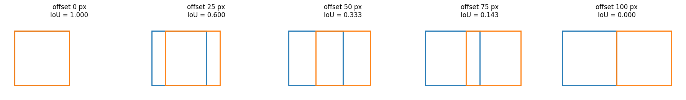

!git clone -q https://github.com/shreyamali17/helmet-violation-detection.git
%cd helmet-violation-detection/project/pipeline/content/helmet-violation-detection/project/pipelineDetection gave us boxes. Association needs to decide which boxes belong together and the model offers no help with that. A helmet box and a rider box arrive as unrelated rectangles.
So the pairing has to be worked out from position alone, which means turning each box into a number or a point that can be compared to another. That’s what this file does. Five small functions, no state, no dependencies.
The interesting part isn’t the arithmetic : it’s which reference point to use for which match. A helmet sits at the top of a rider. A license plate sits at the bottom of a motorcycle. Using the wrong reference point produces a system that works most of the time and fails in ways that are hard to trace.
Every box in this pipeline is four numbers: [x1, y1, x2, y2] : the top-left and bottom-right corners, in pixels.
One thing that catches people out: in image coordinates, y increases downwards. y1 is the top edge, y2 is the bottom. A box near the top of the frame has small y values.
left edge: x = 600
right edge: x = 660
top edge: y = 500 <- smaller y is higher up
bottom edge: y = 650
width = 60 px
height = 150 pxEach function collapses a box down to the one point that makes sense for a particular kind of match.
def x_center(box):
"""Horizontal midpoint. Used for rider-to-motorcycle matching,
applied to both boxes, since horizontal alignment is what matters
there on both sides equally."""
x1, _, x2, _ = box
return (x1 + x2) / 2
def top_center(box):
"""Midpoint of the top edge. Used on the RIDER's box when matching
to a helmet, because a head sits at the top of a body, not at its
vertical center."""
x1, y1, x2, _ = box
return ((x1 + x2) / 2, y1)
def bottom_center(box):
"""Midpoint of the bottom edge. Used on the MOTORCYCLE's box when
matching to a license plate, because plates are mounted low."""
x1, _, x2, y2 = box
return ((x1 + x2) / 2, y2)
def center(box):
"""Plain center. Used on the helmet box and the plate box - the
'other side' of each match, where the object has no directional
bias of its own."""
x1, y1, x2, y2 = box
return ((x1 + x2) / 2, (y1 + y2) / 2)center for everythingBecause a rider’s box covers a whole body. Its center sits around the torso, which is nowhere near the head. Compare the distance from a helmet to the rider’s center against the distance to the rider’s top edge.
rider = (600, 500, 660, 650)
helmet = (610, 495, 650, 530) # sitting on the rider's head
import math
def dist(p, q):
return math.hypot(p[0] - q[0], p[1] - q[1])
h = center(helmet)
print(f"helmet center: {h}")
print(f"rider top_center: {top_center(rider)} distance = {dist(h, top_center(rider)):6.1f} px")
print(f"rider plain center: {center(rider)} distance = {dist(h, center(rider)):6.1f} px")helmet center: (630.0, 512.5)
rider top_center: (630.0, 500) distance = 12.5 px
rider plain center: (630.0, 575.0) distance = 62.5 pxThe gap matters because HEAD_RIDER_MAX_COST is 60 pixels. Measured from the top edge, this helmet is comfortably inside that. Measured from the torso, it would be rejected as too far away the rider’s own helmet, thrown out.
Same logic in reverse for plates: they’re mounted at the bottom of a motorcycle, so bottom_center is the reference point that keeps real plates inside the threshold.
The four functions above reduce a box to a point, which throws away its size. For rider-to-motorcycle matching that’s not good enough two objects can be horizontally aligned and still be nowhere near each other.
IoU keeps the whole rectangle. It asks: of the total area these two boxes cover between them, how much is shared?
\[\text{IoU} = \frac{\text{area of overlap}}{\text{area of union}}\]
The result runs from 0 (no contact) to 1 (identical boxes).
def iou(box_a, box_b):
"""Intersection-over-Union between two [x1,y1,x2,y2] boxes."""
ax1, ay1, ax2, ay2 = box_a
bx1, by1, bx2, by2 = box_b
# the overlapping rectangle: rightmost left edge, leftmost right edge
ix1, iy1 = max(ax1, bx1), max(ay1, by1)
ix2, iy2 = min(ax2, bx2), min(ay2, by2)
# max(0, ...) matters: if the boxes don't overlap, these go negative
iw, ih = max(0, ix2 - ix1), max(0, iy2 - iy1)
inter = iw * ih
area_a = max(0, ax2 - ax1) * max(0, ay2 - ay1)
area_b = max(0, bx2 - bx1) * max(0, by2 - by1)
union = area_a + area_b - inter
return inter / union if union > 0 else 0.0max(0, ix2 - ix1) : when the boxes don’t touch, the “overlap” rectangle comes out inside-out and the width goes negative. Two negatives multiplied would give a positive intersection area for boxes that never met. Clamping to zero is what makes disjoint boxes return 0.
union - inter : the shared region is inside both boxes, so adding the two areas counts it twice. Subtracting it once fixes that. Skip this and IoU under-reports on every pair.
This is the case that motivated switching rider-to-motorcycle matching from x_center to iou.
Two objects, both roughly below the rider’s horizontal position: the motorcycle they’re actually riding, and something unrelated further up the frame.
rider = (600, 500, 660, 650)
their_bike = (590, 600, 670, 760) # directly below - the real pair
distant_object = (610, 150, 650, 180) # far up the frame, same x range
print("rider vs THEIR MOTORCYCLE")
print(f" horizontal distance: {abs(x_center(rider) - x_center(their_bike)):5.1f} px")
print(f" box overlap (IoU): {iou(rider, their_bike):5.3f}")
print()
print("rider vs UNRELATED OBJECT")
print(f" horizontal distance: {abs(x_center(rider) - x_center(distant_object)):5.1f} px")
print(f" box overlap (IoU): {iou(rider, distant_object):5.3f}")rider vs THEIR MOTORCYCLE
horizontal distance: 0.0 px
box overlap (IoU): 0.160
rider vs UNRELATED OBJECT
horizontal distance: 0.0 px
box overlap (IoU): 0.000Horizontal distance rates the unrelated object as the better match : it happens to be more perfectly aligned left-to-right. Overlap correctly gives it zero.
x_center only ever sees one number per box. It cannot tell “directly below the rider” from “two hundred pixels up the frame,” because it never looks at y at all.
x_center is still in the file, but only so the two methods can be compared side by side in the association stage. It isn’t the default anymore.
Slide one box across another and watch IoU respond.
import matplotlib.pyplot as plt
import matplotlib.patches as patches
fixed = (0, 0, 100, 100)
offsets = [0, 25, 50, 75, 100]
fig, axes = plt.subplots(1, len(offsets), figsize=(18, 4))
for ax, dx in zip(axes, offsets):
moving = (dx, 0, dx + 100, 100)
score = iou(fixed, moving)
ax.add_patch(patches.Rectangle((0, 0), 100, 100,
fill=False, edgecolor="tab:blue", lw=2))
ax.add_patch(patches.Rectangle((dx, 0), 100, 100,
fill=False, edgecolor="tab:orange", lw=2))
ax.set_xlim(-20, 220)
ax.set_ylim(-20, 120)
ax.set_aspect("equal")
ax.set_title(f"offset {dx} px\nIoU = {score:.3f}")
ax.axis("off")
plt.tight_layout()
plt.show()
Note it isn’t linear. Shifting by half the box width drops IoU to 0.33, not 0.5 because the union grows at the same time the intersection shrinks.
That’s why RIDER_MOTO_MAX_COST = 0.9, meaning a 0.1 IoU floor, is a looser requirement than it sounds. A rider’s box and their motorcycle’s box overlap only partially even when the pairing is obviously correct.
helmet so it sits at the rider’s waist instead of their head. Does top_center still rate it as close?iou return, and is that the answer you want?That last one is worth sitting with. A helmet is entirely inside a rider’s box, and IoU would be low because the areas are so different which is exactly why helmet matching uses point distance rather than overlap.